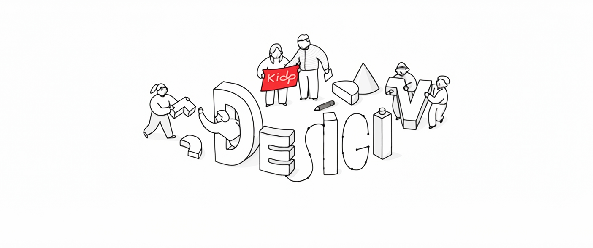

ESG
ESG
HOME > ESG > 사회적가치
Social value사회적가치
한국디자인진흥원은 사회적 책임 이행과 가치 창출을 통해
모든 이해관계자와 함께 성장하고자 사회적 책임 행동규범을 제정합니다.
국민행복과 혁신성장을 선도하는 글로벌 디자인기관 kidp

사회적가치 비전
디자인을 통한 사회적 가치 창출과 국민 삶의 질 향상
기본방향 및 목표(2025년)
- 사회적가치 중심 기관운영 혁신 우수기관
- 국민참여형 정책 개발 및 실행 고객만족도 95점
- 신뢰받는 공공기관 청렴도 1등급
추진전략 및 전략과제
-
- 일자리창출과 고용의 질 개선 일하고 싶은 디자인 일자리 만들기
- 디자인분야 공공·민간일자리 확대 체계정비
- 디자인 혁신을 통한 일자리 창출
-
- 균등기회·사회 통합 주도 차별 없이 함께하는 조직문화 디자인
- 중장기 인력 운영 계획 수립
- 차별 해소, 인력 채용 제도 개선으로 성과창출
-
- 안전 및 환경혁신 안전한 사회, 지속가능한 사회를 위한 디자인
- 수요자 체감 안전·재난 관리
- 지속가능한 환경에 기여하는 기관운영
- 신뢰할 수 있는 기관 정보보안관리
-
- 상생협력 및 지역발전 국민과 함께하는 지역 사회·경제 공유가치 창출 디자인
- 지역기반 사회공헌 활동 추진
- 디자인계와 수요산업계 동반성장 지원
- 사회적 경제 조직 활성화 지원
- 지역사회 연계 프로그램 개발 및 실행
-
- 윤리·인권경영 국민 인권과 윤리 기반 디자인기관 운영
- 윤리기반 경영 체계 구축
- 인권존중을 위한 기관 중장기계획 수립